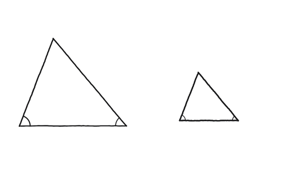
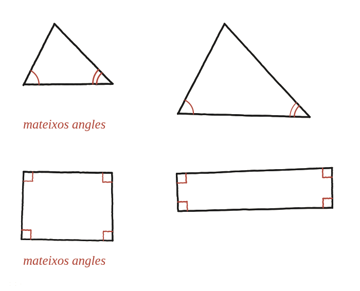

Si dos triangles tenen els mateixos angles, són necessàriament semblants? I les figures de quatre costats?

Dues preguntes, no una
L'enunciat en fa dues, i cal no donar per fet que la segona hereta la resposta de la primera: per què tenir els mateixos angles garanteix la mateixa forma en un triangle, i per què això no s'ha d'esperar automàticament en una figura de quatre costats.
Feines diferents: demostrar no és refutar
Les dues preguntes exigeixen tipus de feina oposats. Si la resposta és sí, sempre (com resultarà ser el cas dels triangles), cal un argument que valgui per a tots els triangles possibles del món —cap dibuix concret ho pot demostrar per si sol. Si la resposta és no, no sempre (com resultarà ser el cas dels quadrilàters), un sol exemple que falli n'hi ha prou: un contraexemple tanca la pregunta del tot, sense necessitat de res més.
Els triangles: per què els mateixos angles ja ho decideixen tot
Aquí sí que cal l'argument general. Dos triangles amb els mateixos tres angles compleixen el criteri de semblança angle-angle-angle (AAA): si els tres parells d'angles coincideixen, els costats corresponents queden forçosament en la mateixa proporció els uns amb els altres, encara que la mida global sigui diferent. No hi ha manera de "deformar" un triangle mantenint els tres angles fixos sense limitar-se a escalar-lo sencer: els angles ja determinen completament la forma.
Els quadrilàters: un sol contraexemple
Aquí no cal cap argument general, només trobar un cas que falli. Un quadrat i un rectangle allargat tenen exactament els mateixos quatre angles —tots quatre rectes, 90° cadascun— i, tanmateix, no tenen la mateixa forma: un té els quatre costats iguals i l'altre no. Aquest sol exemple ja demostra que, per a figures de quatre costats, els mateixos angles no garanteixen la mateixa forma: cal alguna cosa més, com la proporció entre costats consecutius.

Sí per als triangles: el criteri AAA garanteix que els mateixos tres angles impliquen la mateixa forma. No per als quadrilàters: un quadrat i un rectangle allargat tenen els mateixos quatre angles (tots de 90°) i formes clarament diferents — un sol contraexemple n'hi ha prou per tancar la segona pregunta.
Comprovació
La frase "dues figures amb els mateixos angles són semblants" es fa certa afegint-hi "...si són triangles": la propietat depèn essencialment del nombre de costats, no és general a totes les figures poligonals.